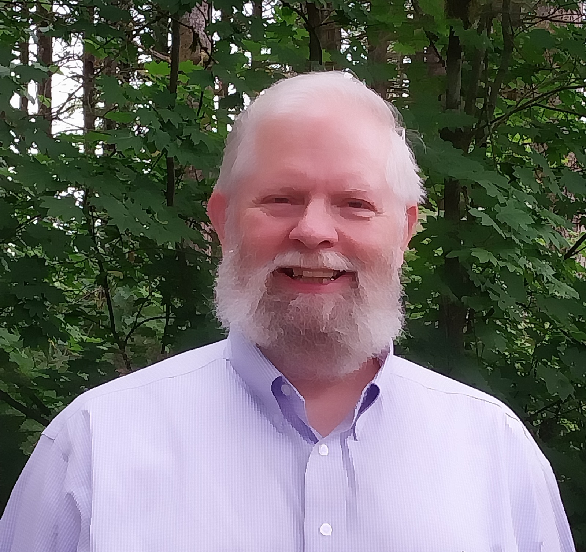
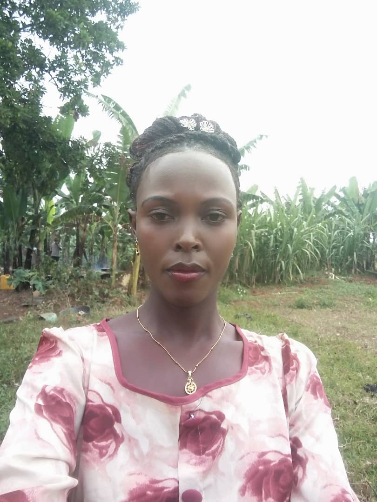

About Us
Our vision, mission, and leadership team
Vision
To create a global network of self-sustaining, empowered communities where every individual—regardless of background or circumstance—has the opportunity to thrive through education, health, vocational training, and sustainable agriculture.
Mission
To restore dignity and hope to displaced and vulnerable populations by providing holistic, community-based development programs that foster self-reliance, healing, and long-term prosperity.
Core Beliefs
- Every human being deserves safety, dignity, and opportunity.
- Education is the foundation of empowerment.
- Sustainable agriculture ensures food security and economic resilience.
- Healing begins with self-awareness, self-acceptance, and community support.
- Vocational training leads to self-sufficiency and economic independence.
Guiding Principles
- Compassion and respect for all individuals
- Integrity in operations and stewardship of resources
- Collaboration with local communities and stakeholders
- Sustainability in environmental, economic, and social practices
- Accountability and transparency in all programs
Our Leadership Team
Bishop Robert Tumusiime
Co-founder Senior Pastor & Director of Operations
Pastor Wayne Turner
Co-Founder Ass. Pastor and Visionary Program Director

Pastor Dean Warner
Spiritual Life Guidance and Empowerment Director
Elder Edmond Kalungi
Operations Manager
Mr. Robert Ssebunya
Community Development Lead

Pastor Sylvia Ahimbisibwe
Director Women and Girl Child Advancement